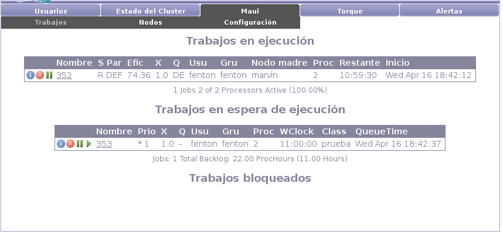

En la subcategoría de trabajos Maui nos presenta todos los trabajos
del sistema.

Los trabajos se encuentran agrupados según su estado:
- En ejecución. Los trabajos en ejecución, tal como su nombre lo dice,
son los trabajos que estan siendo ejecutados actualmente en el sistema.
Por esta razón estos trabajos estan consumiendo recursos del sistema.
En el listado de trabajos se muestran estadísticas de cada trabajo
en ejecución: cantidad de procesadores, tiempo de ejecución actual,
etc.
- En espera. Los trabajos en espera son trabajos que aún no han sido
iniciados en el sistema. Se disponen de los recursos necesarios para
su ejecución pero estos aún no se encuentran disponibles. Al igual
que para el caso anterior podemos ver información de estos trabajos:
prioridad, tiempo de ejecución asignado, etc.
- Bloqueados. Finalmente, los trabajos bloqueados son trabajos que no
serán ejecutados por alguna razón. Puede tratarse de trabajos que
requieran mas recursos de los que se dispone en la totalidad del cluster,
trabajos que consumieron mas recursos de los asignados (p.ej. han
estado ejecutando por demasiado tiempo), trabajos que fueron detenidos
manualmente por parte de un administrador, etc.
Cualquiera sea el estado del trabajo puede consultarse información
adicional del mismo haciendo click sobre el identificador del trabajo
y sobre el botón de información (botón de mas a la izquierda).
Santiago Iturriaga
2008-05-26